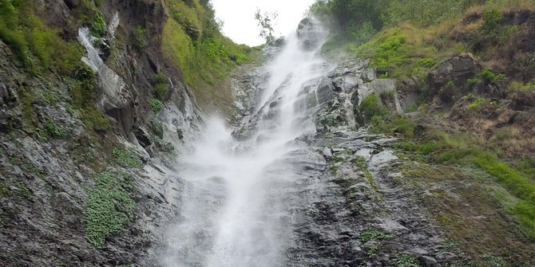

<!DOCTYPE html>
<html lang="en" dir="ltr">
    <meta charset="utf">  
    <link  rel="stylesheet" href="webku.css">
    <link rel="stylesheet" href="https://use.fontawesome.com/releases/v5.6.3/css/all.css">
</html>
<body>
    <meta charset="utf-8">
    <meta name="viewport" content="width=device-width, initial-scale=1.0">
            <div class="col-12 header">
                </div>
        <h1>SEPUTAR NGANJUK</h1>
        <div class="box col-3 col-s-6"> 
        </div>
            <div class="kuliner">
            <h2>Kuliner Nganjuk</h2>
            <h3>Kerupuk Upil</h3>
            
            <p>
                Krupuk Upil adalah jajanan khas Nganjuk yang digoreng tanpa menggunakan minyak namun menggunakan pasir
            </p>
            <h3>Tumpang</h3>
            
            <p>
                Masakan ini tebuat dari tempe yang dilumatkan dan dicampur dengan rempah-rempah khas daerah Nganjuk yang 
                rasanya sangat gurih dan lezat
            </p>
            <h3>Nasi Pecel</h3>
            
            <p>
                Nasi pecel berisi sayuran yang sudah direbus,rempeyek,nasi,dan sambal yang pedas.Perpaduaanya membuat lidah
                 bergoyang dan tidak ingin berhenti untuk makan
            </p>
            <h3>Onde-Onde Nyeblos </h3>
            
            <p>
                Onde-onde ini rasanya manis bentuknyapun juga unik berbeda dari onde-onde pada umumnya yang berisi kacang hijau 
                kupas dan betuknya yang bulat.
            </p>
            <h3>Dumbleg</h3>
            
            <p>
                    Dumbleg adalah jajanan tradisional khas Nganjuk, Jawa Timur. Tepatnya di daerah Kecamatan Gondang dan sekitarnya.
                     Makanan yang unik ini memang mirip pudak  (makanan khas Gresik) tapi yang membuat berbeda adalah rasa dan 
                     tampilannya. Rasa dumbleg ini manis legit dan bentuknya panjang kayak lontong. Jajanan ini
                     yang terbuat dari tepung beras, gula jawa, dan santan yang dibungkus dari pelepah  jambe. Makanan ini 
                     hanya ada pada hari-hari tertentu di Pasar Gondang (tiap Pasaran Pon) dan Pasar Rejoso (tiap pasaran kliwon).
            </p>
            <h3>Nasi Becek</h3>
            
            <p>
                Nasi becek hampir sama dengan gulai namun ada perasan jeruk nipis sehingga rasanya lebih segar dan nkmat.
            </p>
        </div>
      
    
            <div class="budaya">
            <h2>Kebudayaan</h2>
            <h3>Nyadran</h3>
            
            <p>
                Warga masyarakat Dusun Kemlokolegi termasuk salah satu diantara Dusun dan Desa yang ada di wilayah Kabupaten 
                Nganjuk yang sampai sekarang masih melestarikan upacara tradisional Nyadran. Di beberapa daerah ada yang menyebut Sadran.
                Tradisi ini sudah berlangsung ratusan tahun yang silam sampai sekarang. Kata Nyadran maupun Sadran keduanya 
                berasal dari bahasa Sansekerta dari kata Sadra yang kemudian karena perjalanan zaman mengalami perubahan lisan 
                Nyadran atau Sadran.Kata Sadran mempunyai arti ziarah kubur, suatu tradisi masyarakat jawa sejak zaman 
                Hindu-budha di negeri ini. Itu sebabnya dalam acara Nyadran hampir semua warga masyarakat ikut melaksanakan tanpa
                 memandang perbedaan status dan agama yang dianutnya. Bagi warga masyarakat dusun Kemlokolegi, tradisi Nyadran 
                 diselenggarakan mengambil hari jumat Pahing atau Jumat Legi, pada bulan-bulan usai masa panen padi.
                  baru akhir-akhir ini dijatuhkan pada bulan April, hal ini dikandung maksud di samping telah usai
                masa panen padi juga sekaligus ikut merayakan hari jadi Kota Nganjuk.
            </p>
            <h3>Wayang Timplong</h3>
            
            <br>
            <br>
            <video controls>
            <source src="videoplayback.mp4" type="audio/mp3">
                </video>
            <p>
                Kesenian tradisional ini konon mulai ada sejak tahun 1910 dari Dusun Kedung Bajul Desa Jetis Kecamatan
                 Pace,Provinsi Jawa Timur.Wayang ini terbuat dari kayu,baik kayu waru,mentaos maupun pinus.Instrumen gamelan 
                 yang digunakan sebagai musik pengiring
                .Gambang pun juga terbuat dari kayu atau bambu.
            </p>
            <h3>Tari Mung Dhe</h3>
            
            <p>
                Tari tradisional yang berasal dari Desa Garu, Kecamatan Baron,Nganjuk .tari ini bertemakan kepahlawanan dan 
                cinta tanah air,heroic dan patriotism.tari ini berkaitan erat dengan kalahnya prajurit diponegoro yang dipimpin 
                oleh Sentot Prawirodirdjo.
            </p>
        </div>


            <div class="wisata">
            <h2>Tempat Wisata</h2>
            <h3>Sedudo</h3>
            
            <p>
                sebuah air terjun dan obyek wisata yang terletak di Desa Ngliman Kecamatan Sawahan, Kabupaten Nganjuk,
                 Jawa Timur. Jaraknya sekitar 30 km arah selatan ibukota kabupaten Nganjuk. Berada pada ketinggian 1.438 meter dpl,
                  ketinggian air terjun ini sekitar 105 meter. Tempat wisata ini memiliki fasilitas yang cukup baik, dan jalur 
                  transportasi yang mudah diakses.
            </p>
            <h3>Anjuk Ladang</h3>
            
            <p>
                Terletak di Kota Nganjuk, sebelah timur Terminal Bus Kota Nganjuk, di dalamnya tersimpan benda (cagar budaya 
                jaman Hindu, Doho dan Majapahit) yang terdapat di daerah Kabupaten Nganjuk. Disamping itu disimpan Prasasti
                 Anjuk Ladang yang merupakan
                cikal bakal berdirinya Kabupaten Nganjuk.
            </p>
            <h3>Candi Lor</h3>
            
            <p>
                Candi terbuat dari batu bata merah ini terletak di Desa Candi Kecamatan Loceret 5 km ke arah selatan kota
                 Nganjuk, diperkirakan dibangun pada tahun 859 Sak, atau 937 Masehi, terbuat dari batu bata merah. Di sekitar 
                 candi inilah ditemukan prasasti Anjuk Ladang.
            </p>
            <h3>Candi Ngetos</h3>
            
            <p>
                    Candi yang dihiasi dengan kepala kala ini terletak didesa Ngetos atau Atas Angin Kecamatan Ngetos ± 15 km dari 
                    selatan pusat Nganjuk. Menurut cerita, candi ini dibangun atas prakarsa raja Majapahit (Hayam Wuruk) yang
                     diperuntukkan sebagai tempat penyimpanan abu jenazanya.
            </p>
            
            </div>
       
    
    </body>